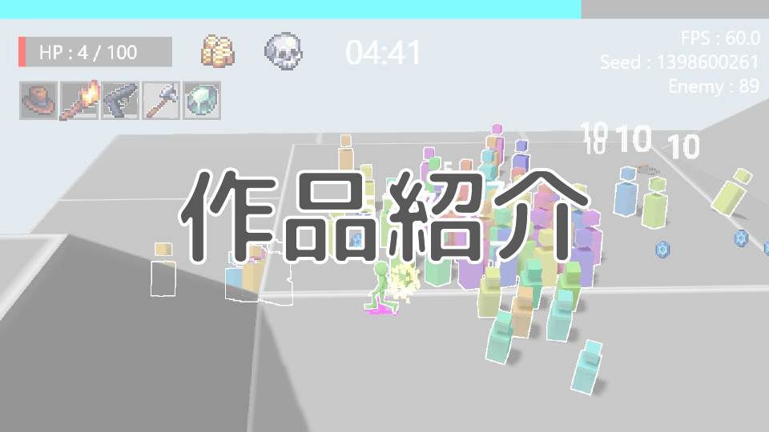

01
色で判断できる選択UI
枠だけでなくUI全体をレアリティ色へ寄せ、選択肢の価値を一目で把握できる構成へ改善。
GAME PROGRAMMER / PORTFOLIO 2026
大量の敵をなぎ倒す爽快感。迷わず理解できるUI。遊びの手触りを支える描画と最適化。自作エンジンからゲーム体験まで、一つずつ組み立てています。

01 / FEATURED PROJECT
大量の敵を倒しながら成長していく、個人制作の3Dローグライク。繰り返し遊びたくなる「爽快感のあるゲーム体験」を目標に開発しています。
フィールドを埋め尽くす敵、派手なダメージ表示、アイテムが大量に落ちる達成感。処理負荷と向き合いながら、画面の密度そのものを遊びの価値へ変えています。
02 / GAME FEEL
ゲームらしさは、入力に対する小さな反応の積み重ね。見た瞬間に意味が伝わり、操作した瞬間に手応えが返るよう、UIとアニメーションを調整しています。
枠だけでなくUI全体をレアリティ色へ寄せ、選択肢の価値を一目で把握できる構成へ改善。
背景画像の上昇でクールタイムを可視化し、攻撃時にはUIを拡大。画面の隅から戦闘のテンポを演出。
真下の影ではモデルが平面的に見える課題に対し、立体的な着地点マーカーで距離感と視認性を両立。
03 / ENGINEERING CASE
大量の敵を出すというゲーム体験の目標から、衝突判定のボトルネックを特定。地形が静的であることに着目し、必要十分な仕組みへ問題を単純化しました。
20 × 20のマップブロックと敵100体を判定し、組み合わせは1フレームあたり40,000回。DebugビルドではFPSが大きく低下しました。
K-d Tree、Dynamic BVH、Static BVHを比較。地形のAABBは初期化後に動かないため、木の更新を持たないStatic BVHが目的と実装範囲に最適と判断しました。
マップ生成時にAABBを登録し、ゲーム開始時に木を一度だけ構築。毎フレームの探索では交差しないノード以下を省き、詳細判定の候補だけを返します。
MEASURED RESULT / DEBUG BUILD
最適化は数字を改善するためだけではなく、大量の敵・エフェクト・ドロップアイテムを同時に見せる体験へ直結しています。
04 / SELECTED WORKS
個人制作から自作エンジンを使ったチーム制作まで、役割を広げながら取り組んできました。
初めて制作したゲーム。企画から実装まで、すべてを担当。
自作エンジンの提供、エフェクト、タイトル・リザルトシーンを担当。
ゲームシーン全般、BPMシステム、演出、エフェクトを担当。
05 / ABOUT
GAME PROGRAMMER
アプリケーション開発、エフェクト制作、そして「ゲームらしさ」を作ることが得意です。遊ぶ人が感じる小さな違和感を拾い、技術と演出の両面から改善します。
C++ / C# / HLSL
DirectX 12 / ImGui
Visual Studio / GitHub / Blender / FireAlpaca
カラオケ / グルメ / ボードゲーム